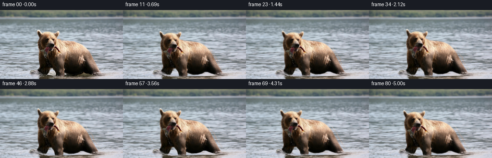
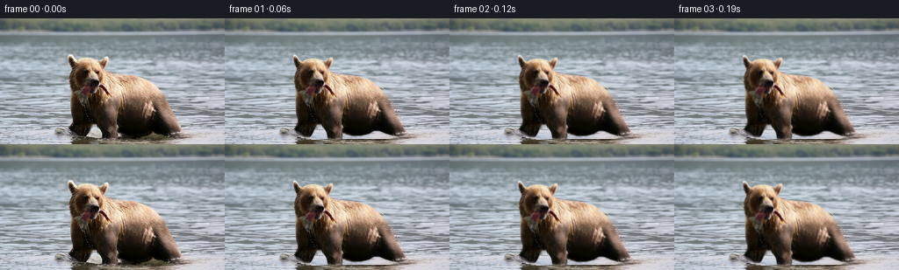
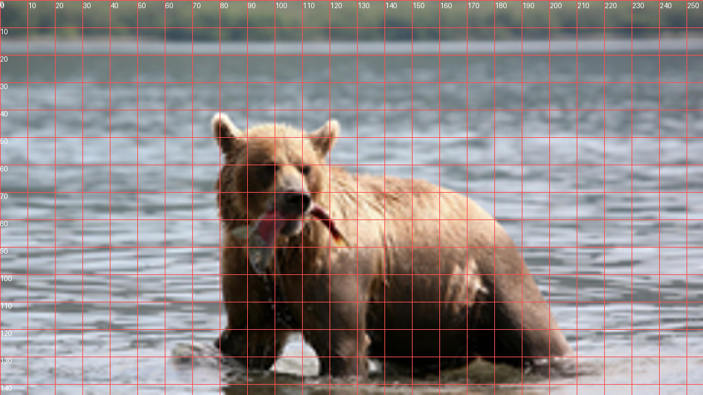
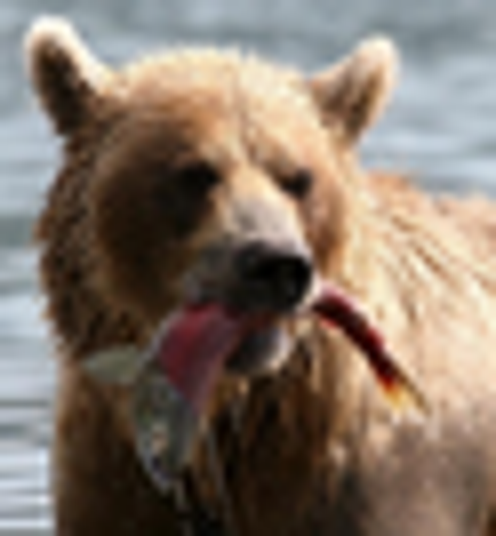
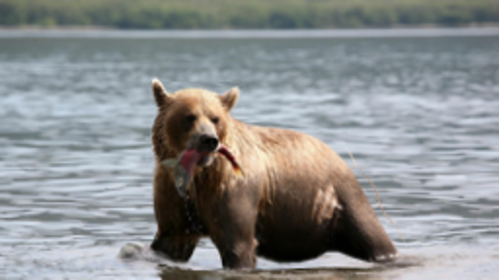
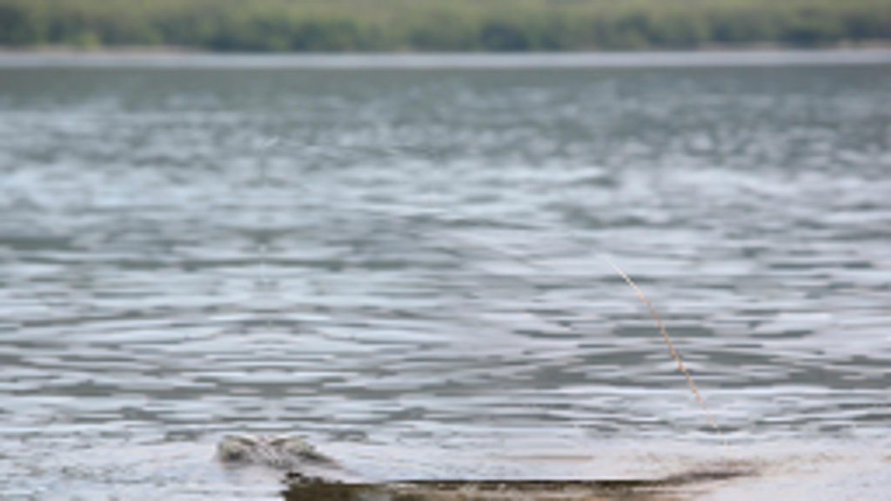
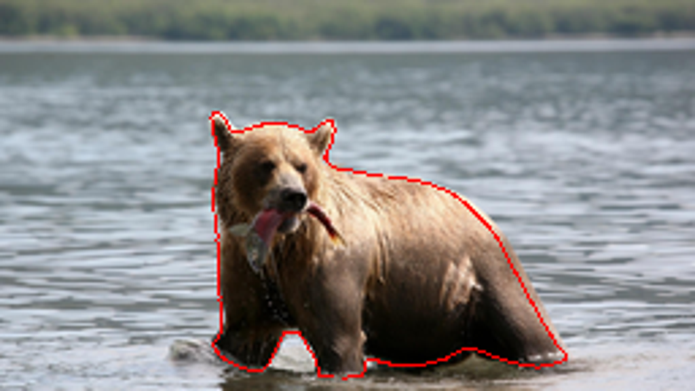
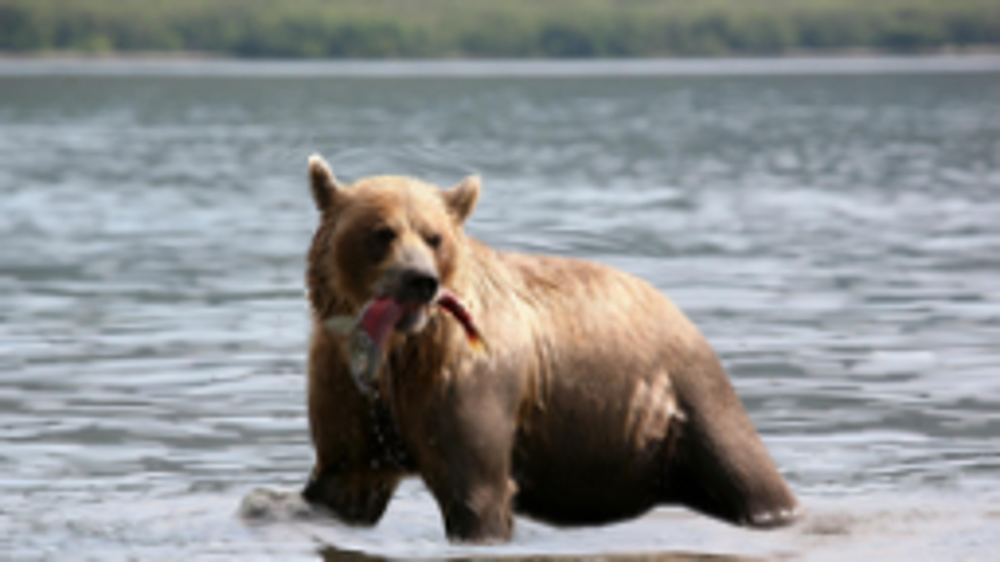
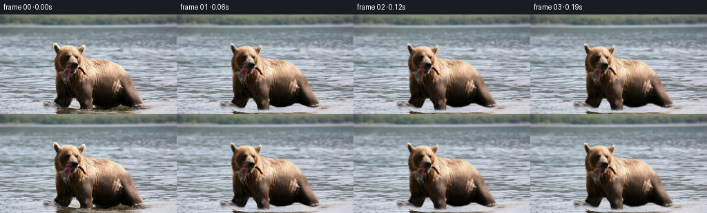

CODING AGENTS AS PIXEL WORLD MODELS
traex/GPT-6.1-Sol · 0872_s3
点击播放 · 原生 RGB 像素
逐轮保存的候选
回放视频、检查图与代码变化。
每份候选均可单独播放。实际图片检查记录在下方工具轨迹中。
候选 01播放与检查图
点击播放 · 原生 RGB 像素

展开代码变化
--- 上一保存版本
+++ 本次保存版本
@@ -0,0 +1,177 @@
+"""Animate the supplied photograph using deterministic pixel warps and water motion."""
+from pathlib import Path
+import math
+import numpy as np
+from PIL import Image, ImageDraw, ImageFilter
+from scipy.ndimage import map_coordinates, gaussian_filter, binary_dilation
+import artifact_io
+
+ROOT = Path(__file__).resolve().parent
+W,H = 256,144
+Y,X = np.mgrid[:H,:W].astype(np.float32)
+
+def polygon(points, blur=.35):
+ im=Image.new('L',(W*4,H*4))
+ ImageDraw.Draw(im).polygon([(round(x*4),round(y*4)) for x,y in points],fill=255)
+ im=im.resize((W,H),Image.Resampling.LANCZOS)
+ if blur: im=im.filter(ImageFilter.GaussianBlur(blur))
+ return np.asarray(im,dtype=np.float32)/255.
+
+def smooth(a,b,z):
+ u=np.clip((z-a)/(b-a),0,1)
+ return u*u*(3-2*u)
+
+def sample(im,x,y):
+ if im.ndim==2:
+ return map_coordinates(im,[y,x],order=1,mode='nearest',prefilter=False)
+ return np.stack([map_coordinates(im[:,:,c],[y,x],order=1,mode='nearest',prefilter=False) for c in range(im.shape[2])],-1)
+
+OUTLINE=[(78,42),(80,41),(83,44),(85,48),(88,49),(92,47),(97,45.8),
+ (104,45.5),(110,47),(114,49),(119,45),(122,44.3),(123,47.5),(122,52),
+ (119.5,58),(122,61.5),(130,63),(138,64.5),(148,65.5),(158,67.5),
+ (166,71),(172,75.5),(179,82.5),(184,89),(189,99),(195,110),
+ (200,119),(205,127),(209,131.5),(206,133.5),(198,135),(191,134),
+ (183,131.5),(176,128.7),(170,128.5),(164,132),(156,134),(146,134.5),
+ (139,132.8),(135,132),(133.5,138),(127,139),(118,138.5),(116,132),
+ (112,125),(110,122),(105,122),(102,127),(99.5,132.5),(97,136),
+ (91,136),(86,134),(81,131),(78.5,127),(81,123),(82,119),
+ (81,111),(80.5,101),(80.2,93),(80,86),(79,79),(78.6,73),
+ (79.5,64),(81.1,57),(79.6,52),(78.3,47)]
+
+
+def make_clean_background(src,alpha):
+ # Continue water from either side across the photographic foreground.
+ area=binary_dilation(alpha>.04,iterations=2)
+ fill=src.copy()
+ for row in range(H):
+ cols=np.flatnonzero(area[row])
+ if not len(cols): continue
+ l,r=int(cols[0]),int(cols[-1])
+ xx=np.arange(l,r+1)
+ lx=np.clip(2*(l-1)-xx,0,W-1)
+ rx=np.clip(2*(r+1)-xx,0,W-1)
+ mix=smooth(.28,.72,(xx-l)/max(r-l,1))[:,None]
+ vals=src[row,lx]*(1-mix)+src[row,rx]*mix
+ fill[row,xx]=vals
+ return fill
+
+
+def displacement(sx,sy,t):
+ # Rigid translation plus articulated, smoothly feathered joint motions.
+ p=smooth(0,5,t)
+ dx=-4.2*p + .43*np.sin(2*np.pi*t/2.5)
+ dy=.65*np.sin(2*np.pi*t/2.35)+.14*np.sin(2*np.pi*t/1.2)
+ # Shoulder and rib-cage breathing, without altering the overall silhouette.
+ breathing=.0045*np.sin(2*np.pi*t/2.8)
+ torso=np.exp(-((sx-151)/41)**4-((sy-102)/42)**4)
+ ux=np.full_like(sx,dx)+breathing*(sx-145)*torso
+ uy=np.full_like(sy,dy)+breathing*(sy-103)*torso
+ # Head remains structurally rigid; deformation is confined to the neck join.
+ hw=(1-smooth(117,140,sx))*(1-smooth(88,108,sy))
+ ramp=smooth(0,.65,t)
+ angle=np.deg2rad(ramp*(-2.6*np.sin(2*np.pi*t/3.8)+.7*np.sin(2*np.pi*t/1.65)))
+ ca,sa=np.cos(angle),np.sin(angle)
+ hx,hy=sx-110,sy-89
+ hu=(ca-1)*hx-sa*hy-.65*ramp*np.sin(2*np.pi*t/3.8)
+ hv=sa*hx+(ca-1)*hy+.85*ramp*np.sin(2*np.pi*t/3.8)
+ ux+=hw*hu; uy+=hw*hv
+ # Alternating small foreleg weight shifts in the shallow river.
+ phase=2*np.pi*t/2.3
+ weight=smooth(101,134,sy)
+ leg1=np.exp(-((sx-90)/10.0)**4)*weight
+ leg2=np.exp(-((sx-124)/10.5)**4)*weight
+ ux+=leg1*(.85*np.sin(phase))+leg2*(-1.0*np.sin(phase))
+ uy+=leg1*(-1.5*max(0,np.sin(phase)))+leg2*(-1.35*max(0,-np.sin(phase)))
+ hind=np.exp(-((sx-193)/12)**4)*smooth(111,133,sy)
+ ux+=hind*.45*np.sin(phase+.4)*ramp
+ # A small chew around the lower muzzle keeps the fish firmly in its bite.
+ jaw=np.exp(-((sx-104)/9)**4-((sy-80)/7)**4)
+ uy+=jaw*.32*np.sin(2*np.pi*t*1.55)*ramp
+ # Hanging fish flexes below the bite, and its exposed tail flicks.
+ fish=np.exp(-((sx-96)/8)**4)*smooth(80,96,sy)*(1-smooth(101,106,sy))
+ ux+=fish*1.05*np.sin(2*np.pi*t/1.35)*ramp
+ uy+=fish*.28*np.sin(2*np.pi*t/1.35+.5)*ramp
+ tail=np.exp(-((sx-122)/6.0)**4-((sy-83)/7.0)**4)*smooth(115,126,sx)
+ uy+=tail*.8*np.sin(2*np.pi*t/1.05)*ramp
+ return ux,uy
+
+
+def water_background(clean,t):
+ depth=smooth(17,110,Y)
+ # Flow is predominantly horizontal, with tiny changes of wave height.
+ wx=depth*(.8*(np.sin(Y*.27+1.45*t)-np.sin(Y*.27))
+ +.28*(np.sin(X*.045+Y*.10-1.1*t)-np.sin(X*.045+Y*.10)))
+ wy=depth*(.24*(np.sin(X*.068+Y*.31+1.3*t)-np.sin(X*.068+Y*.31))
+ +.13*(np.sin(X*.13-Y*.17-.8*t)-np.sin(X*.13-Y*.17)))
+ out=sample(clean,X+wx,Y+wy)
+ # Fine surface glints drift independently of the broader ripples.
+ light=.75*depth*(np.sin(X*.13+Y*1.3-.8*t)-np.sin(X*.13+Y*1.3))
+ return np.clip(out+light[...,None],0,255)
+
+
+def ripples(t,alpha,dx):
+ field=np.zeros((H,W),dtype=np.float32)
+ # Small outgoing elliptical wakes from the three water contact points.
+ for k,(cx,cy,offset) in enumerate([(93,135,.0),(125,138,.75),(199,133,1.5)]):
+ for j in range(-2,5):
+ age=t-(j*1.15-offset)
+ if not 0<age<2.4: continue
+ rx=4+age*14.0; ry=.8+age*2.6
+ r=np.sqrt(((X-(cx+dx))/(rx))**2+((Y-cy)/ry)**2)
+ crest=np.exp(-((r-1)*ry/.30)**2)
+ trough=np.exp(-((r-1.12)*ry/.55)**2)
+ arcs=.5+.5*np.sin(X*.12+k*1.7)**2
+ fade=(1-age/2.4)*smooth(0,.3,age)*smooth(0,.35,t)
+ field+=(crest*5.5-trough*2.4)*arcs*fade
+ field*=1-alpha
+ return field
+
+
+def droplets(out,t,alpha):
+ # Drops of river water drain naturally off the fish under gravity.
+ for j in range(-1,17):
+ launch=j*.39+.08
+ age=t-launch
+ if not 0<age<.7: continue
+ u,v=displacement(np.array([[98.]],np.float32),np.array([[99.]],np.float32),max(0,launch))
+ px=98+float(u[0,0])+.4*np.sin(j*2.4)+age*.45
+ py=99+float(v[0,0])+17*age+59*age*age
+ if py>139: continue
+ opacity=(.45+.15*np.sin(j*1.7))*smooth(0,.07,age)*smooth(0,.6,t)
+ droplet=np.exp(-(((X-px)/.36)**2+((Y-py)/(.55+age*.6))**2)/2)*opacity
+ # High enough contrast to read as a tiny transparent falling droplet.
+ color=np.array([174,190,188],np.float32)
+ out=out*(1-droplet[...,None])+color*droplet[...,None]
+ return out
+
+
+def generate():
+ src=np.asarray(Image.open(ROOT/'first_frame.png').convert('RGB'),dtype=np.float32)
+ alpha=polygon(OUTLINE,.28)
+ clean=make_clean_background(src,alpha)
+ premul=src*alpha[...,None]
+ frames=[]
+ for i in range(81):
+ t=i/16.
+ if i==0:
+ frames.append(src.astype(np.uint8)); continue
+ # Iterative inverse solution avoids holes during jointed pixel transport.
+ sx=X.copy(); sy=Y.copy()
+ for _ in range(5):
+ u,v=displacement(sx,sy,t)
+ sx=X-u; sy=Y-v
+ a=sample(alpha,sx,sy)
+ fg=sample(premul,sx,sy)
+ bg=water_background(clean,t)
+ dx=-4.2*smooth(0,5,t)+.43*np.sin(2*np.pi*t/2.5)
+ wave=ripples(t,a,dx)
+ bg=np.clip(bg+wave[...,None],0,255)
+ out=fg+bg*(1-a[...,None])
+ out=droplets(out,t,a)
+ frames.append(np.clip(np.rint(out),0,255).astype(np.uint8))
+ frames=np.asarray(frames)
+ artifact_io.save(frames,ROOT)
+ return frames
+
+if __name__=='__main__':
+ generate()
候选 02播放与检查图
点击播放 · 原生 RGB 像素


展开代码变化
--- 上一保存版本
+++ 本次保存版本
@@ -41,7 +41,7 @@
def make_clean_background(src,alpha):
# Continue water from either side across the photographic foreground.
- area=binary_dilation(alpha>.04,iterations=2)
+ area=binary_dilation(alpha>.04,iterations=6)
fill=src.copy()
for row in range(H):
cols=np.flatnonzero(area[row])
@@ -69,11 +69,11 @@
# Head remains structurally rigid; deformation is confined to the neck join.
hw=(1-smooth(117,140,sx))*(1-smooth(88,108,sy))
ramp=smooth(0,.65,t)
- angle=np.deg2rad(ramp*(-2.6*np.sin(2*np.pi*t/3.8)+.7*np.sin(2*np.pi*t/1.65)))
+ angle=np.deg2rad(ramp*(-3.8*np.sin(2*np.pi*t/3.8)+.7*np.sin(2*np.pi*t/1.65)))
ca,sa=np.cos(angle),np.sin(angle)
hx,hy=sx-110,sy-89
hu=(ca-1)*hx-sa*hy-.65*ramp*np.sin(2*np.pi*t/3.8)
- hv=sa*hx+(ca-1)*hy+.85*ramp*np.sin(2*np.pi*t/3.8)
+ hv=sa*hx+(ca-1)*hy+1.05*ramp*np.sin(2*np.pi*t/3.8)
ux+=hw*hu; uy+=hw*hv
# Alternating small foreleg weight shifts in the shallow river.
phase=2*np.pi*t/2.3
@@ -147,7 +147,10 @@
def generate():
src=np.asarray(Image.open(ROOT/'first_frame.png').convert('RGB'),dtype=np.float32)
- alpha=polygon(OUTLINE,.28)
+ # The lit fur extends a fraction of a pixel beyond the main silhouette.
+ outline=[(x+.8 if x>=148 and y<133 else x,
+ y-.3 if 46<y<76 and x>90 else y) for x,y in OUTLINE]
+ alpha=polygon(outline,.34)
clean=make_clean_background(src,alpha)
premul=src*alpha[...,None]
frames=[]
候选 03播放与检查图
可观测工具轨迹
实际执行的命令与返回图片。
命令 1exit 0
/bin/bash -lc "ls -la && cat prompt.txt && printf '\\n---RULES---\\n' && cat GENERATION_RULES.md"
命令 2exit 0
/bin/bash -lc "cat task_spec.json && cat artifact_io.py && python - <<'PY'
from PIL import Image
im=Image.open('first_frame.png'); print(im.size); im.resize((1024,576)).save('.tmp/first_large.png')
PY"命令 3exit 0
/bin/bash -lc "python - <<'PY'
from PIL import Image,ImageDraw
im=Image.open('first_frame.png').resize((1024,576))
d=ImageDraw.Draw(im)
for x in range(0,256,10):
d.line([(4*x,0),(4*x,576)],fill=(250,80,80),width=1);d.text((4*x+1,2),str(x),fill='white')
for y in range(0,144,10):
d.line([(0,4*y),(1024,4*y)],fill=(250,80,80),width=1);d.text((0,4*y),str(y),fill='white')
im.save('.tmp/grid.png')
PY"命令 4exit 0
/bin/bash -lc "python - <<'PY' import importlib.util for m in ['numpy','PIL','scipy','cv2']: print(m, bool(importlib.util.find_spec(m))) PY"
命令 5exit 0
/bin/bash -lc "python - <<'PY'
from PIL import Image
im=Image.open('first_frame.png'); im.crop((74,39,136,106)).resize((496,536)).save('.tmp/head.png')
PY"命令 6exit 0
/bin/bash -lc 'which ffmpeg || true'
命令 7exit 0
/bin/bash -lc "cat > generate.py <<'PY'
\"\"\"Animate the supplied photograph using deterministic pixel warps and water motion.\"\"\"
from pathlib import Path
import math
import numpy as np
from PIL import Image, ImageDraw, ImageFilter
from scipy.ndimage import map_coordinates, gaussian_filter, binary_dilation
import artifact_io
ROOT = Path(__file__).resolve().parent
W,H = 256,144
Y,X = np.mgrid[:H,:W].astype(np.float32)
def polygon(points, blur=.35):
im=Image.new('L',(W*4,H*4))
ImageDraw.Draw(im).polygon([(round(x*4),round(y*4)) for x,y in points],fill=255)
im=im.resize((W,H),Image.Resampling.LANCZOS)
if blur: im=im.filter(ImageFilter.GaussianBlur(blur))
return np.asarray(im,dtype=np.float32)/255.
def smooth(a,b,z):
u=np.clip((z-a)/(b-a),0,1)
return u*u*(3-2*u)
def sample(im,x,y):
if im.ndim==2:
return map_coordinates(im,[y,x],order=1,mode='nearest',prefilter=False)
return np.stack([map_coordinates(im[:,:,c],[y,x],order=1,mode='nearest',prefilter=False) for c in range(im.shape[2])],-1)
OUTLINE=[(78,42),(80,41),(83,44),(85,48),(88,49),(92,47),(97,45.8),
(104,45.5),(110,47),(114,49),(119,45),(122,44.3),(123,47.5),(122,52),
(119.5,58),(122,61.5),(130,63),(138,64.5),(148,65.5),(158,67.5),
(166,71),(172,75.5),(179,82.5),(184,89),(189,99),(195,110),
(200,119),(205,127),(209,131.5),(206,133.5),(198,135),(191,134),
(183,131.5),(176,128.7),(170,128.5),(164,132),(156,134),(146,134.5),
(139,132.8),(135,132),(133.5,138),(127,139),(118,138.5),(116,132),
(112,125),(110,122),(105,122),(102,127),(99.5,132.5),(97,136),
(91,136),(86,134),(81,131),(78.5,127),(81,123),(82,119),
(81,111),(80.5,101),(80.2,93),(80,86),(79,79),(78.6,73),
(79.5,64),(81.1,57),(79.6,52),(78.3,47)]
def make_clean_background(src,alpha):
# Continue water from either side across the photographic foreground.
area=binary_dilation(alpha>.04,iterations=2)
fill=src.copy()
for row in range(H):
cols=np.flatnonzero(area[row])
if not len(cols): continue
l,r=int(cols[0]),int(cols[-1])
xx=np.arange(l,r+1)
lx=np.clip(2*(l-1)-xx,0,W-1)
rx=np.clip(2*(r+1)-xx,0,W-1)
mix=smooth(.28,.72,(xx-l)/max(r-l,1))[:,None]
vals=src[row,lx]*(1-mix)+src[row,rx]*mix
fill[row,xx]=vals
return fill
def displacement(sx,sy,t):
# Rigid translation plus articulated, smoothly feathered joint motions.
p=smooth(0,5,t)
dx=-4.2*p + .43*np.sin(2*np.pi*t/2.5)
dy=.65*np.sin(2*np.pi*t/2.35)+.14*np.sin(2*np.pi*t/1.2)
# Shoulder and rib-cage breathing, without altering the overall silhouette.
breathing=.0045*np.sin(2*np.pi*t/2.8)
torso=np.exp(-((sx-151)/41)**4-((sy-102)/42)**4)
ux=np.full_like(sx,dx)+breathing*(sx-145)*torso
uy=np.full_like(sy,dy)+breathing*(sy-103)*torso
# Head remains structurally rigid; deformation is confined to the neck join.
hw=(1-smooth(117,140,sx))*(1-smooth(88,108,sy))
ramp=smooth(0,.65,t)
angle=np.deg2rad(ramp*(-2.6*np.sin(2*np.pi*t/3.8)+.7*np.sin(2*np.pi*t/1.65)))
ca,sa=np.cos(angle),np.sin(angle)
hx,hy=sx-110,sy-89
hu=(ca-1)*hx-sa*hy-.65*ramp*np.sin(2*np.pi*t/3.8)
hv=sa*hx+(ca-1)*hy+.85*ramp*np.sin(2*np.pi*t/3.8)
ux+=hw*hu; uy+=hw*hv
# Alternating small foreleg weight shifts in the shallow river.
phase=2*np.pi*t/2.3
weight=smooth(101,134,sy)
leg1=np.exp(-((sx-90)/10.0)**4)*weight
leg2=np.exp(-((sx-124)/10.5)**4)*weight
ux+=leg1*(.85*np.sin(phase))+leg2*(-1.0*np.sin(phase))
uy+=leg1*(-1.5*max(0,np.sin(phase)))+leg2*(-1.35*max(0,-np.sin(phase)))
hind=np.exp(-((sx-193)/12)**4)*smooth(111,133,sy)
ux+=hind*.45*np.sin(phase+.4)*ramp
# A small chew around the lower muzzle keeps the fish firmly in its bite.
jaw=np.exp(-((sx-104)/9)**4-((sy-80)/7)**4)
uy+=jaw*.32*np.sin(2*np.pi*t*1.55)*ramp
# Hanging fish flexes below the bite, and its exposed tail flicks.
fish=np.exp(-((sx-96)/8)**4)*smooth(80,96,sy)*(1-smooth(101,106,sy))
ux+=fish*1.05*np.sin(2*np.pi*t/1.35)*ramp
uy+=fish*.28*np.sin(2*np.pi*t/1.35+.5)*ramp
tail=np.exp(-((sx-122)/6.0)**4-((sy-83)/7.0)**4)*smooth(115,126,sx)
uy+=tail*.8*np.sin(2*np.pi*t/1.05)*ramp
return ux,uy
def water_background(clean,t):
depth=smooth(17,110,Y)
# Flow is predominantly horizontal, with tiny changes of wave height.
wx=depth*(.8*(np.sin(Y*.27+1.45*t)-np.sin(Y*.27))
+.28*(np.sin(X*.045+Y*.10-1.1*t)-np.sin(X*.045+Y*.10)))
wy=depth*(.24*(np.sin(X*.068+Y*.31+1.3*t)-np.sin(X*.068+Y*.31))
+.13*(np.sin(X*.13-Y*.17-.8*t)-np.sin(X*.13-Y*.17)))
out=sample(clean,X+wx,Y+wy)
# Fine surface glints drift independently of the broader ripples.
light=.75*depth*(np.sin(X*.13+Y*1.3-.8*t)-np.sin(X*.13+Y*1.3))
return np.clip(out+light[...,None],0,255)
def ripples(t,alpha,dx):
field=np.zeros((H,W),dtype=np.float32)
# Small outgoing elliptical wakes from the three water contact points.
for k,(cx,cy,offset) in enumerate([(93,135,.0),(125,138,.75),(199,133,1.5)]):
for j in range(-2,5):
age=t-(j*1.15-offset)
if not 0<age<2.4: continue
rx=4+age*14.0; ry=.8+age*2.6
r=np.sqrt(((X-(cx+dx))/(rx))**2+((Y-cy)/ry)**2)
crest=np.exp(-((r-1)*ry/.30)**2)
trough=np.exp(-((r-1.12)*ry/.55)**2)
arcs=.5+.5*np.sin(X*.12+k*1.7)**2
fade=(1-age/2.4)*smooth(0,.3,age)*smooth(0,.35,t)
field+=(crest*5.5-trough*2.4)*arcs*fade
field*=1-alpha
return field
def droplets(out,t,alpha):
# Drops of river water drain naturally off the fish under gravity.
for j in range(-1,17):
launch=j*.39+.08
age=t-launch
if not 0<age<.7: continue
u,v=displacement(np.array([[98.]],np.float32),np.array([[99.]],np.float32),max(0,launch))
px=98+float(u[0,0])+.4*np.sin(j*2.4)+age*.45
py=99+float(v[0,0])+17*age+59*age*age
if py>139: continue
opacity=(.45+.15*np.sin(j*1.7))*smooth(0,.07,age)*smooth(0,.6,t)
droplet=np.exp(-(((X-px)/.36)**2+((Y-py)/(.55+age*.6))**2)/2)*opacity
# High enough contrast to read as a tiny transparent falling droplet.
color=np.array([174,190,188],np.float32)
out=out*(1-droplet[...,None])+color*droplet[...,None]
return out
def generate():
src=np.asarray(Image.open(ROOT/'first_frame.png').convert('RGB'),dtype=np.float32)
alpha=polygon(OUTLINE,.28)
clean=make_clean_background(src,alpha)
premul=src*alpha[...,None]
frames=[]
for i in range(81):
t=i/16.
if i==0:
frames.append(src.astype(np.uint8)); continue
# Iterative inverse solution avoids holes during jointed pixel transport.
sx=X.copy(); sy=Y.copy()
for _ in range(5):
u,v=displacement(sx,sy,t)
sx=X-u; sy=Y-v
a=sample(alpha,sx,sy)
fg=sample(premul,sx,sy)
bg=water_background(clean,t)
dx=-4.2*smooth(0,5,t)+.43*np.sin(2*np.pi*t/2.5)
wave=ripples(t,a,dx)
bg=np.clip(bg+wave[...,None],0,255)
out=fg+bg*(1-a[...,None])
out=droplets(out,t,a)
frames.append(np.clip(np.rint(out),0,255).astype(np.uint8))
frames=np.asarray(frames)
artifact_io.save(frames,ROOT)
return frames
if __name__=='__main__':
generate()
PY
python generate.py"命令 8exit 0
/bin/bash -lc "python - <<'PY'
from PIL import Image
im=Image.open('frames/46.png'); im.resize((1024,576)).save('.tmp/frame46.png')
PY"命令 9exit 0
/bin/bash -lc "python - <<'PY'
import generate
from PIL import Image
import numpy as np
src=np.array(Image.open('first_frame.png'),dtype=np.float32)
a=generate.polygon(generate.OUTLINE,.28)
bg=generate.make_clean_background(src,a)
Image.fromarray(bg.astype('uint8')).resize((1024,576)).save('.tmp/clean.png')
edge=(a>.1)&(a<.9)
src[edge]=[255,0,0]
Image.fromarray(src.astype('uint8')).resize((1024,576)).save('.tmp/maskcheck.png')
PY"命令 10exit 0
/bin/bash -lc "python generate.py && python - <<'PY'
from PIL import Image
import numpy as np
frames=np.stack([np.array(Image.open(f'frames/{i:02d}.png')) for i in range(81)])
assert frames.shape==(81,144,256,3)
assert np.array_equal(frames[0],np.array(Image.open('first_frame.png').convert('RGB')))
print('Validated RGB shape, frame count, and pixel-identical first frame.')
print('Mean per-frame change:',np.mean(np.abs(np.diff(frames.astype(float),axis=0))))
Image.fromarray(frames[46]).resize((1024,576)).save('.tmp/frame46_final.png')
Image.fromarray(frames[1]).resize((1024,576)).save('.tmp/frame01_final.png')
PY"视觉工具实际返回图片 1

视觉工具实际返回图片 2

视觉工具实际返回图片 3

视觉工具实际返回图片 4

视觉工具实际返回图片 5

视觉工具实际返回图片 6

视觉工具实际返回图片 7

视觉工具实际返回图片 8

视觉工具实际返回图片 9

保存候选 3 份；完成命令 10 次；可验证图片返回 9 张。原始 API 响应与完整日志保留在本地。